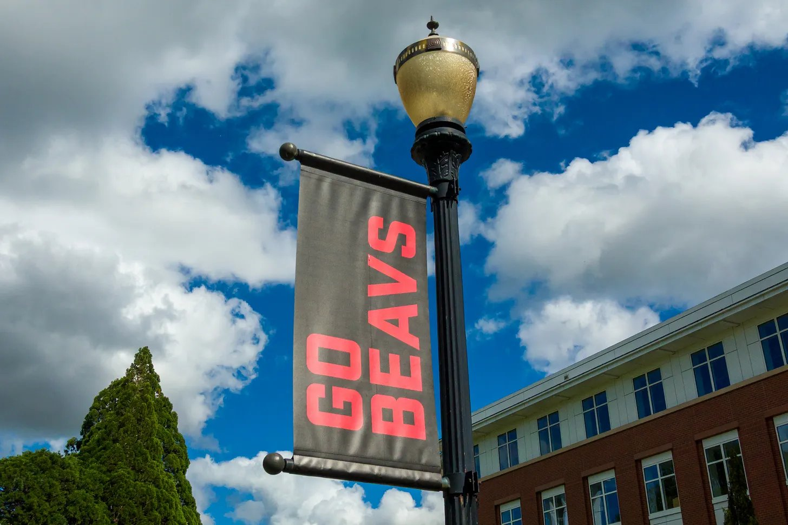
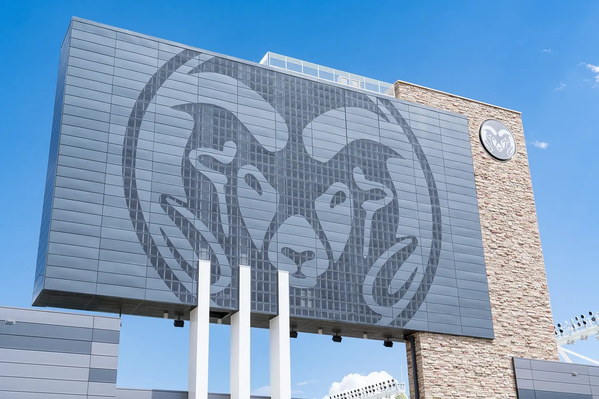

The all-new Pac-12 opens its conference slate with an incredible matchup between two top conference contenders: Elevation Change’s No. 3 Oregon State (2-2) visiting No. 6 Colorado State (2-2).
Both teams come in with uninspiring 2-2 records, but both have been nationally relevant during the first month of the 2026 season. Oregon State has made headlines by pushing two top Big 12 contenders to the brink and Colorado State has showcased a powerful offense that should continue to produce points.
The star duo of sophomore quarterback Braden Atkinson and freshman wide receiver Jesse Legree for Oregon State have taken college football by storm with their performances so far this season. Atkinson was an unheralded transfer from FCS Mercer who had the underlying stats to prove he could succeed at the FBS level. He’s proved it so far this season with 1,421 yards, third in the FBS, and 11 touchdowns in the air through four games this season. In his first taste of collegiate football, Legree is second in the FBS in receiving yards with 585, with his eight-catch, 240-yard, two-touchdown performance against Texas Tech being his magnum opus.

Colorado State comes into this contest sporting the 4th best scoring offense among G6 schools and 25th in all of college football. Led by transfer quarterback Hauss Hejny and talented senior running back Mel Brown, the Rams have been lethal whenever they have possession of the football.
The Rams have hit a rut since their 2-0 start. Back-to-back losses against then-No. 11 BYU and at UTSA saw its offense continue to shine, but its defense unravel. Currently, Colorado State is 135th out of 138 in yards per game allowed while also being 129th in points allowed per game. Those are not sustainable statistics for success. Defensive coordinator Tyson Summers has a tall task in limiting Atkinson and Legree this weekend.

If the defense is serviceable, the offense has a great chance of beating the Beavers. K’Saan Farrar filled in admirably for an injured Hejny in its matchup against UTSA, throwing for 344 yards and 2 touchdowns while making only his second career start. Brown has been one of the better running backs in the G6. He’s third in the Pac-12 in rushing yards at 346 and T-5th in the FBS in average yards per rush at 9.1. If Hejny is able to play, Colorado State’s offense becomes even stronger and should be able to push around a good but not great Oregon State defense. The Rams have the tools, but can they assemble the winning formula?
Conventional statistics point toward Oregon State because of the Atkinson-Legree connection against Colorado State’s defense, and the Elevation Change model agrees. The Beavers are third in the Elevation Change rankings and have consistently outperformed their expectations this season. Colorado State is still liked by our model, but a lack of defensive consistency hinders them from being the true threat that they could be.
At the time of publishing, Oregon State is favored by six after opening at 3.5 according to DraftKings. The market is riding on a high scoring game, with an over/under of 61.5, and we’re going to agree on both fronts. The question may not be whether Colorado State can score, but whether its defense can generate enough stops to keep pace. We think that the Beavers offense will be too much for the Rams defense, but it will still be one of the best games we have on the G6 slate this week.
Prediction
- Oregon State
- 34
- Colorado State
- 27